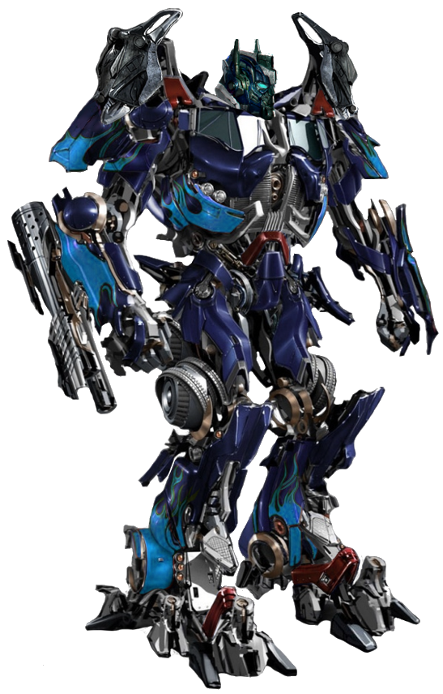
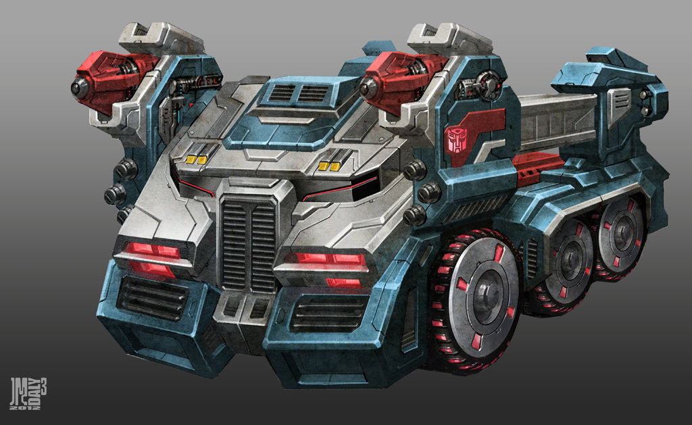

Ultra Magnus (hay còn gọi là Magnus và Ultra Mammoth ) cảm thấy mình là một người lính và không hơn không kém. Anh ấy rất thích nhận mệnh lệnh hơn là đưa ra chúng, và thậm chí tránh cơ hội nhận trách nhiệm cao hơn. Nhưng khi anh ta bị ép vào những cơ hội đó, anh ta đã phản bội tài năng thực sự của mình cho công việc. Anh ấy mạnh mẽ, kiên quyết, đáng tin cậy, vị tha và can đảm. Đáng buồn thay, Ultra Magnus là Autobot duy nhất không nhận ra điều này. Tin rằng mình chẳng là gì ngoài một người lính, Ultra Magnus hoàn toàn sẵn sàng hy sinh bản thân vì lợi ích lớn hơn nếu cần. Anh ta biết mình mạnh hơn Autobot bình thường và sẽ lao vào những mối đe dọa lớn hơn tương ứng. Anh ấy được cả Autobots và Decepticons tôn trọng nhờ lòng dũng cảm và sự hy sinh của anh ấy. Có một sự thù hận đặc biệt giữa anh ta và Galvatron vì lý do này, vì Galvatron có thể là kẻ thù nguy hiểm nhất trong tất cả. (Ngoài ra, Galvatron, với trạng thái tinh thần của anh ấy, có lẽ không tán thành việc những người mà anh ấy đã cho nổ tung lại đứng dậy sau đó. Đây cũng có thể được coi là một điểm nhức nhối đối với Magnus.)

Ultra Magnus được bổ nhiệm làm Chỉ huy của Autobot City một thời gian trước năm 2005 . Trong Trận chiến thành phố Autobot , anh ta không thể ngăn chặn nhiều binh lính của mình và quân tiếp viện bị tàn sát, bao gồm cả Optimus Prime . Tuy nhiên, để vinh danh Ultra Magnus vì những nỗ lực của anh ấy, Optimus đã trao cho anh ấy Ma trận Lãnh đạo và chỉ huy các Autobot. Tuy nhiên, Ma trận có những ý tưởng khác, thay vào đó, chọn Rodimus Prime làm người mang nó. Ultra Magnus đồng ý với điều đó và trở thành chỉ huy thứ hai đáng tin cậy của Rodimus Prime .
Mặc dù không phải là Prime, Ultra Magnus đã trở thành kẻ thù không đội trời chung thứ hai của thủ lĩnh Decepticon Galvatron . Cả hai đã có rất nhiều trận đánh nhau, và giữa lúc đó, Ultra Magnus cũng phải đối phó với đối thủ không đội trời chung mà anh ta tìm thấy trong Cyclonus chỉ huy thứ hai của Galvatron .

Trong một dòng thời gian tách rời, Ultra Magnus đã kết thúc cuộc đời mình vào năm 2011 dưới bàn tay của Sixshot và sau đó được chôn cất trên Trái đất. Cuối cùng anh ta đã được hồi sinh để đối phó với mối đe dọa của Galvatron II , một kẻ mất trí nhảy chiều mạnh mẽ. Magnus sau đó được Alpha Trion triệu tập để hỗ trợ các phiên bản thực tế thay thế của Autobots ở một chiều không gian khác, mặc dù Magnus nhận thấy những nỗ lực của mình bị cuốn vào băng đỏ quan liêu, vì các phe robot đấu tay đôi trên thực tế là đối thủ của công ty trong vũ trụ mới này .